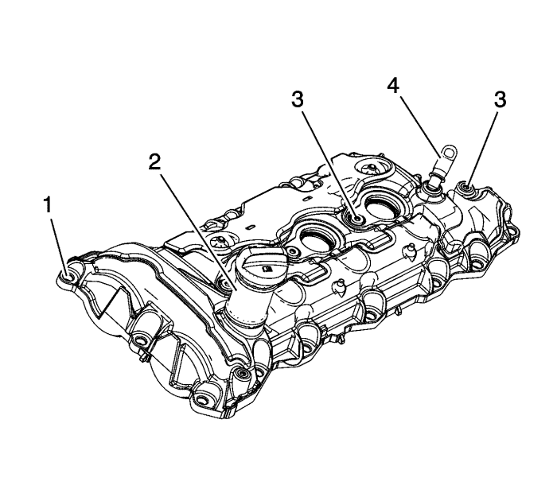
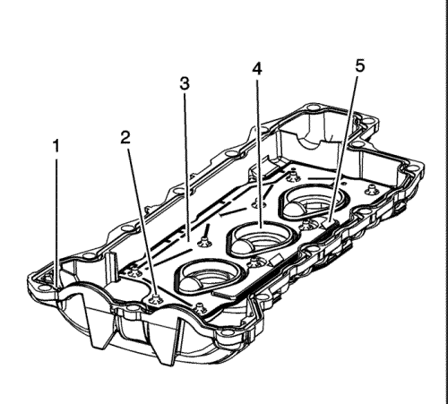
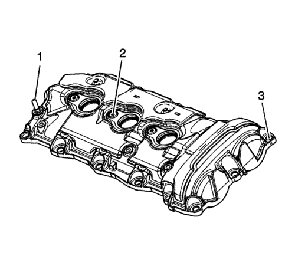
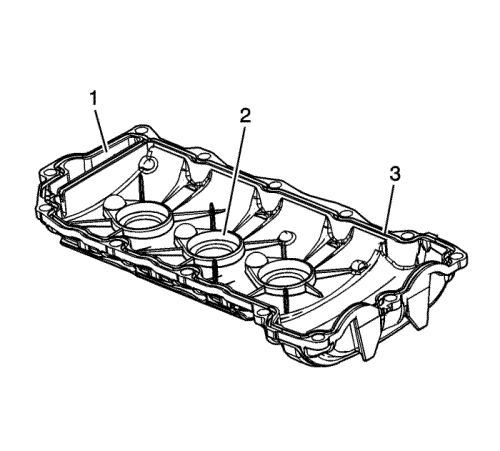
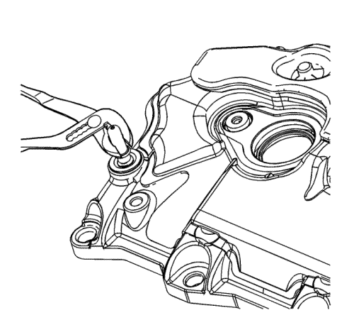
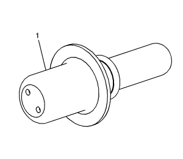
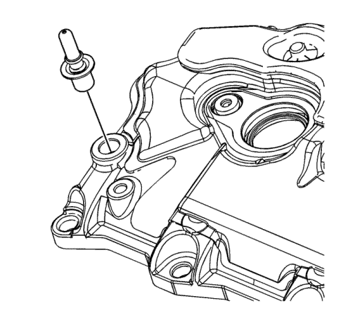
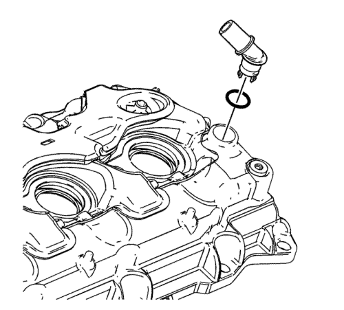

Revisión y limpieza de la tapa del árbol de levas
Procedimiento de limpieza
- Limpie las tapas del árbol de levas con disolvente.
Advertencia: Consulte Advertencia, protección ocular en la sección Prólogo
- Secar las tapas del los árboles de levas utilizando aire a presión.
Procedimiento de inspección
- Revise cada cubierta del árbol de levas para ver si tiene abolladuras o puntos defectuosos. Una cubierta del árbol de levas abollada o defectuosa puede:
| • | Provocar fugas de aceite del motor |
| • | Afectar a la ventilación de la carcasa del cigüeñal |
| • | Interferir con el árbol de levas |
| • | Interferir con la estanqueidad de la bobina de encendido |
| • | Permitir que entre agua o condensación en el motor |

- Inspeccione el exterior de la tapa del árbol de levas izquierdo para las siguientes condiciones:
| • | Daño a los orificios de los pernos del árbol de levas (1). |
| • | Daños al tubo de llenado de aceite (2) |
| • | Daños en los orificios de montaje (3) del conjunto de la bobina de encendido y el perno de bola de pantalla protectora de las válvulas de inyección. |
| • | Daños en el conector del tubo flexible (4) de ventilación positiva del cárter del cigüeñal (PCV)--Si el conector del tubo flexible de la PCV está dañado, puede sustituirse. |

- Inspeccione lo siguiente para el interior de la tapa del árbol de levas izquierdo:
| • | Arañazos o daños en la ranura de estanqueidad de la cubierta del árbol de levas (1) |
| • | Tensores de placa deflectora deteriorados, sueltos o ausentes (2) |
| • | Placa deflectora deteriorada, suelta o ausente (3) |
| • | Arañazos o daños en el orificio de la junta del protector de la bujía (4) |
| • | Limitaciones del sistema de ventilación (5) |

- Inspeccione lo siguiente para el exterior de la tapa del árbol de levas derecho:
| • | Daños en el orificio de la PCV (1)--Si el orificio de la PCV está dañado, puede sustituirse. Consulte Sustitución del orificio de PCV. |
| • | Daños a los orificios de montaje (2) del conjunto de la bobina de encendido |
| • | Daño a los orificios de los pernos del árbol de levas (3). |

- Inspeccione lo siguiente para el interior de la tapa del árbol de levas derecho:
| • | Limitaciones del sistema de ventilación (1) |
| • | Arañazos o daños en el orificio de la junta del protector de la bujía (2) |
| • | Arañazos o daños en la ranura de estanqueidad de la cubierta del árbol de levas (3) |
- Si es necesario, repare o sustituya la cubierta o cubiertas del árbol de levas.
Sustitución del orificio de PCV

Nota: Si el orificio de PCV está deteriorado u obstruido y no se puede limpiar, se podrá sustituir.
- Desmonte el antiguo orificio de PCV cogiendo el cuello del orificio con tenazas y girándolo y sacándolo de la cubierta derecha del árbol de levas.

- Aplique el sellador GM P/N 12378521 ( P/N 88901148 canadiense) o equivalente en el orificio NUEVO de PCV (1).

- Monte el NUEVO orificio de PCV en la cubierta derecha del árbol de levas. Después de colocarlo, gire el orificio de PCV para eliminar cualquier recorrido de fuga vertical del sellador.
Sustitución del accesorio de PCV

Nota: Si el accesorio de PCV está deteriorado u obstruido y no se puede limpiar, se podrá sustituir.
- Desmonte el accesorio de PCV antiguo.
- Monte el nuevo accesorio de PCV con una NUEVA junta tórica.
| © Copyright Chevrolet Europe. All rights reserved |